Table of Contents
- 1. Introduction
- 2. System Requirements & Startup
- 3. Interface Overview & Layout
- 4. Cue Types & Features
- 5. Audio Editing & Waveform Control
- 6. Video & Image Settings & Timing
- 7. Display & Geometry Calibration (Keystone & Mesh)
- 8. Custom Masking & Global Mask Toggle
- 9. Playback Controls & Keyboard Shortcuts
- 10. Timecode System
- 11. Video Preview Window
- 12. Project Management & Packaging
- 13. FADE Cue & Chain Control
- 14. Multi-screen & Video Streaming (RTSP & NDI)
- 15. Network Cue (Network Cue)
- 16. sACN (E1.31) Lighting Network Remote Control
- 17. Dual-Machine Hot-Standby Redundancy
- 18. Troubleshooting
1. Introduction
Cue Lab is a professional multi-cue show control playback software designed for theater productions, multimedia exhibitions, and art installations. It supports high-definition video output to external screens or projectors, features advanced real-time keystone correction, multi-layer masking blending, and multi-channel audio routing to deliver a stable, reliable, and intuitive control experience for lighting and media designers.
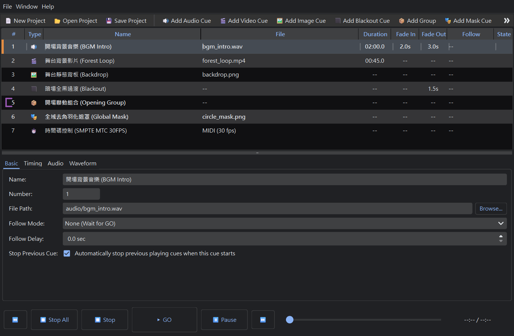
Key Technical Features
🔊 Independent Audio Routing
Configure dedicated local soundcards or physical outputs for different audio channels to fit surround-sound layouts.
🎬 Dedicated Projection Output
Output borderless, clean high-definition video and images to external projectors or screens without mouse cursor interference.
📐 Geometry & Keystone Correction
Adjust distorted projections in real-time using four-corner grids and precise keyboard adjustments.
🎭 Multi-Layer Mask Blending
Apply custom image masks with Normal, Crop, and Block blending modes, independent rotation, and opacity control.
📦 One-Click Project Bundling
Scan and copy all associated media files, rewrite paths to relative directory formats, and package into a portable bundle folder.
↩️ Full Undo/Redo Engine
Record operation histories, allowing you to hit Ctrl+Z to cancel accidental edits or values adjustments.
2. System Requirements & Startup
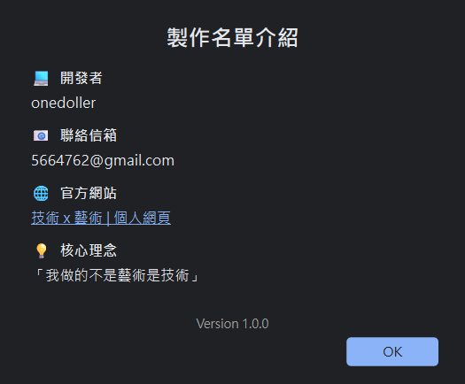
OS & Hardware Recommendations
| Hardware / OS Item | Minimum Requirement | Recommended Specification |
|---|---|---|
| Operating System | Windows 10 64-bit | Windows 11 Pro |
| Processor (CPU) | Intel Core i5 equivalent or higher | Intel Core i7 / AMD Ryzen 7 or higher |
| Memory (RAM) | 8 GB | 16 GB or more |
| Graphics Card (GPU) | Integrated Intel HD graphics (OpenGL 3.3+) | Discrete NVIDIA GeForce card (for smooth video decoding) |
| Outputs | HDMI / DisplayPort (for multi-screen projection) | Multiple independent outputs (HDMI/DP/etc.) |
First Startup
Extract the package folder and double-click CueLab.exe to run. The software is fully portable and requires no internet connection or activation keys—ideal for theater control environments with closed LANs.
3. Interface Overview & Layout
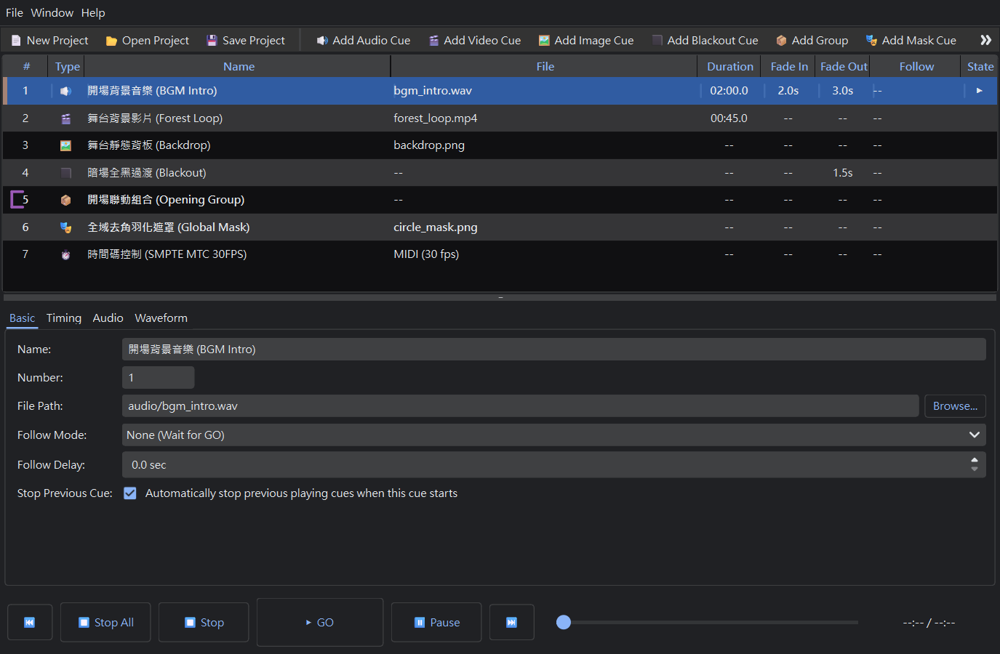
The main interface consists of four primary sections: Control Toolbar, Left Cue List Table, Bottom Waveform Visualizer, and Right Inspector Panel.
Primary Interface Areas
| Area | Location | Functionality |
|---|---|---|
| Control Toolbar | Top center | Provides large GO, Pause, and Panic controls, quick shortcuts to add Cues, and the Settings Dialog launcher. |
| Cue List Table | Left side | Displays all programmed Cues in the project, showing ID number, type icon, name, file path, timing duration, follow mode, and state. |
| Inspector Panel | Right side | Lists all properties and attributes of the selected Cue, categorized into Basic, Time, Audio, Display, and Group tabs. |
| Waveform Visualizer | Bottom left | Draws the visual audio wave representation for the selected Cue, supporting drag and keyboard markers to adjust start/end times. |
💡 Right-Click Context Menu
Right-click any row in the Cue List to access actions: Copy, Cut, Paste, Insert Above/Below, Group Selected, Ungroup, or Auto-Renumber.
4. Cue Types & Features
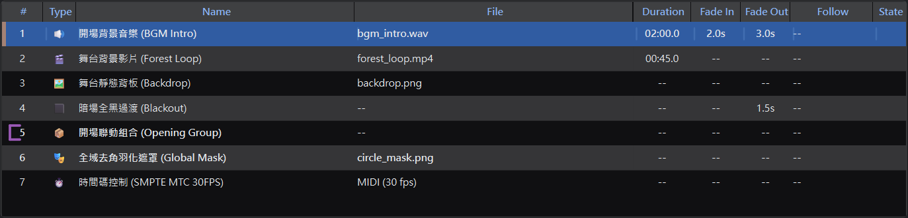
Cue Lab provides 9 specialized Cue types to construct your show playback structure:
| Type | Icon | Best For | Core Attributes |
|---|---|---|---|
| Audio Cue | 🔊 Audio | Background music, SFX | Volume scale, playback speed, start/end crop markers, fade times, hardware soundcard routing. |
| Video Cue | 🎬 Video | Dynamic projections | Shares all audio attributes, plus scale mode, visual layers, opacity, custom coordinates (XY position/size), keystone grids, and masks. |
| Image Cue | 🖼 Image | Static backdrop images | Scale mode, visual layers, opacity, XY positions, sizes, keystone, and masks. |
| Blackout Cue | ⬛ Blackout | Transitions & scene ends | Fade-out time. Automatically fades out all active visual items and resets display output to pure black. |
| Group Cue | 📦 Group | Parallel trigger, playlist | Child member list, playback orders. Groups multiple child cues to trigger them at once or sequentially. |
| Mask Cue | 🎭 Mask | Edge feathering, custom shape | Saves custom mask shapes. Controls opacity, rotation, scaling, and can be applied by other Video or Image Cues. |
| Timecode Cue | ⏱️ Timecode | External show sync, timeline track | Timecode output modes (LTC/MTC), start offset timing, output frames rate (FPS), and target MIDI port. |
| Fade Cue | 📉 Fade | Volume/Opacity/Transform/Keystone gradual changes | Fade transition duration, target Cue ID, control switches (Volume, Opacity, Transform, Keystone) with target limit values, value grabbing (Grab), and live previewing. |
| Network Cue | 🌐 Network | Projector, lighting board or QLab control | Network protocol (OSC/PJLink), target device IP and Port settings, command path/payload strings. |
5. Audio Editing & Waveform Control
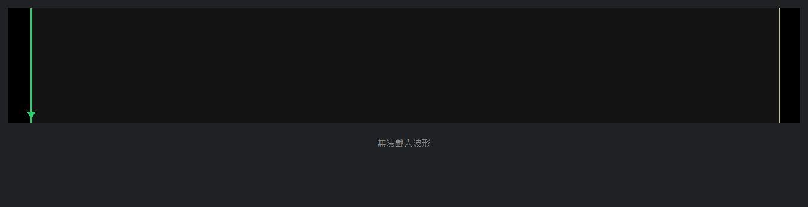
When an Audio Cue or Video Cue is selected, the waveform editor at the bottom visualizes the sound track, allowing you to crop media visually.
Visual Waveform Cropping
- Select Marker: Click the **green start marker** or **orange end marker** in the waveform. The selected line will highlight with a thick line width.
- Mouse Drag: Drag the highlighted line left or right to set the playback start or end seconds.
- Keyboard Micro-adjustments: Press
←or→keys to adjust in increments of0.1 seconds:- Press
Shift+ Arrow keys: Jump by1.0 second(coarse edit). - Press
CtrlorAlt+ Arrow keys: Fine-tune by0.01 seconds(super micro-edit).
- Press
Audio Properties & Multi-device Routing
Under the "Audio" tab in the Inspector panel, you can configure high-level routing and fine-grained channel volume controls:
- Volume: Controls VLC player overall playback volume from
0%to200%, with a quick mute toggle checkbox. - Playback Rate (Speed): Speed scale from
0.25xto4.0xof the original speed.
Multi-device Audio Routing & Channel Volume Envelopes Configuration
The software supports routing a single Audio Cue to multiple physical audio output devices simultaneously. Additionally, you can configure linear volume envelopes independently per output device and channel, which is perfect for multi-channel live theater settings or complex sound routing designs.
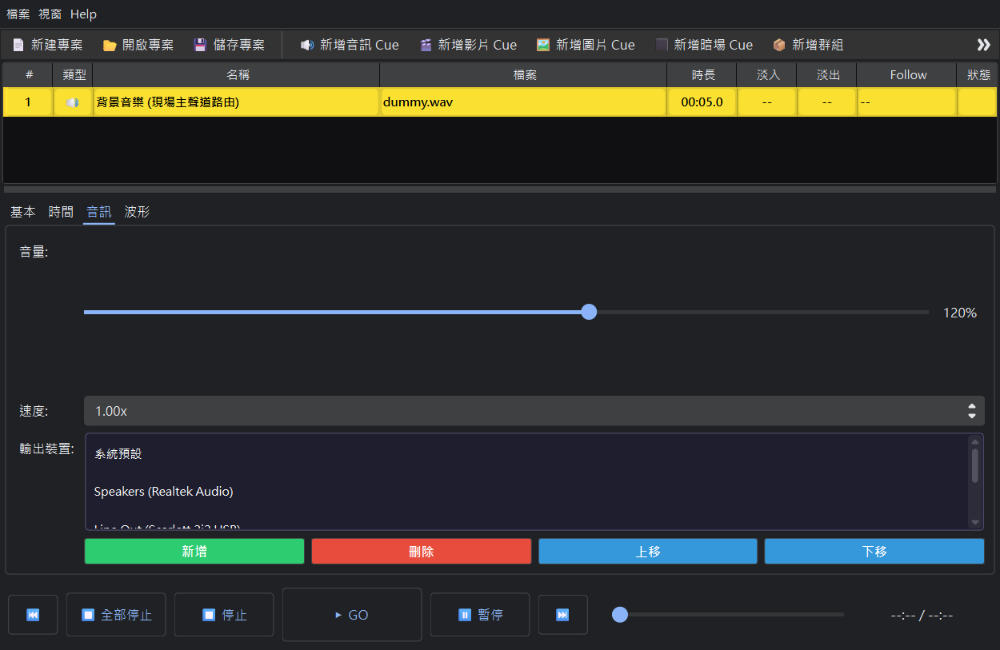
Multi-device Audio Routing Workflow
- Add Output Devices: In the Inspector's "Audio" tab, click the "Add" button and select target physical soundcards or audio interfaces from the menu.
- Manage Device List: Select any device in the list and click "Delete" to remove it, or use the "Move Up" and "Move Down" buttons to prioritize and adjust their playback order.
- Synchronized Playback: When played, the engine instantiates dedicated VLC media players for each device in the list, keeping them in microsecond-level synchronization.
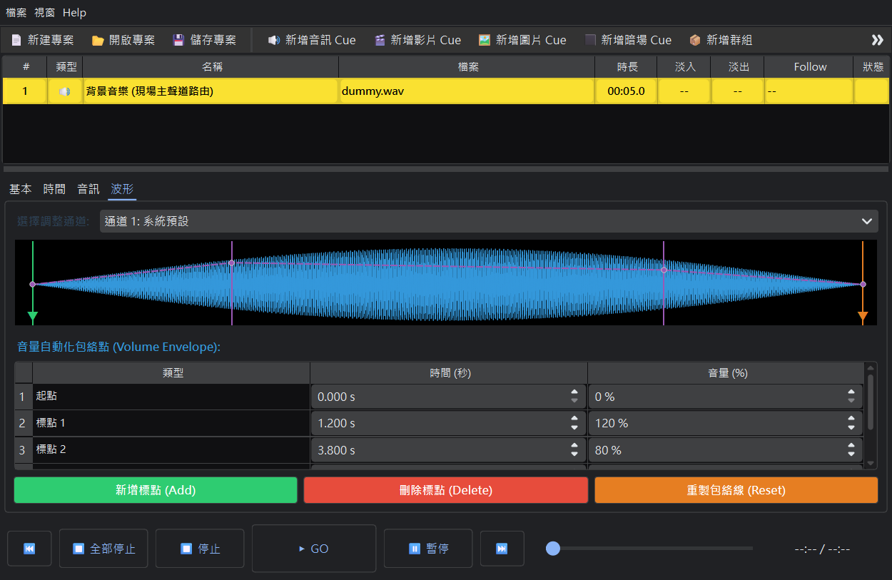
Volume Envelope Points Editing Workflow
- Select Target Device & Channel: Navigate to the "Waveform" tab in the Inspector and select the target device channel index (e.g. Channel 1, Channel 2) above the waveform graph.
- Add/Edit Volume Points:
- Add Points: Click the left mouse button anywhere in the waveform envelope graph area (blue line) to insert a new yellow envelope control point at that time.
- Adjust Values & Time: Click and drag any yellow point vertically to adjust the volume gain (from 0% to 200%) or horizontally to adjust its position on the timeline.
- Linear Interpolation Fade: The audio engine performs real-time linear interpolation between points to dynamically scale the volume during playback, creating smooth fade curves.
- Table Data Management: The table under the waveform widget lists the precise time (in seconds) and volume value of all points. You can also edit values directly in the table cells or delete points from there.
6. Video & Image Settings & Timing
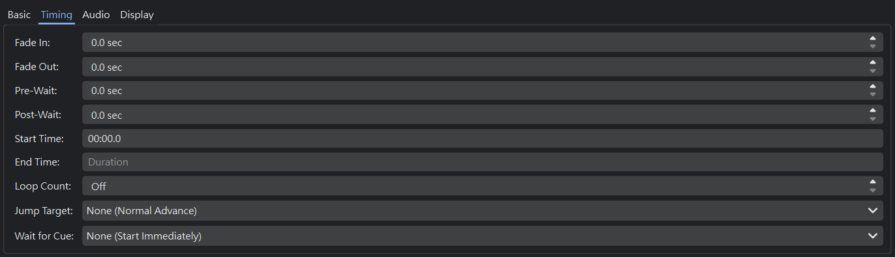
For Video Cues and Image Cues, modify display layout and trigger timing rules under the "Display" and "Timing" tabs in the Inspector:
Visual Properties
- Visual Layer: Layer rank from
1 to 10. Cues on higher layers display on top of lower ones. - Opacity: Transparency from
0.0(fully clear) to1.0(fully opaque) for overlap blending. - Scale Mode:
Fit: Scales media to fit the display boundary preserving aspect ratio, creating black margins if needed.Fill: Crops and fills the screen, leaving no borders.Stretch: Stretches the image to fit the projection output, regardless of aspect ratio.
- Transform (Coordinates): Click
Transformto open a visual layout window where you can drag and scale the projection item, or use arrow keys to edit XY position, width, and height.
Timing & Follow Scheduling
- Follow Mode:
None (Wait for GO): Holds after execution, waiting for manual GO input.Follow (Auto Next on Finish): Auto-triggers the next Cue in list once this Cue finishes playing.Continue (Auto Next on Start): Automatically triggers the next Cue the exact instant this Cue starts playing.
- Loop Count: Loop repetition times. Set to
-1for infinite loop playback. - Jump Target: Automatically jump the Playhead pointer to a specific Cue ID when this Cue finishes playing.
7. Display & Geometry Calibration (Keystone / Mesh Keystone)
When the projection angle is tilted relative to the screen, or the surface is curved or irregular, geometric distortions occur. Cue Lab provides both **traditional 4-corner Keystone calibration** and **multi-point Mesh Keystone calibration** to align the output image perfectly.
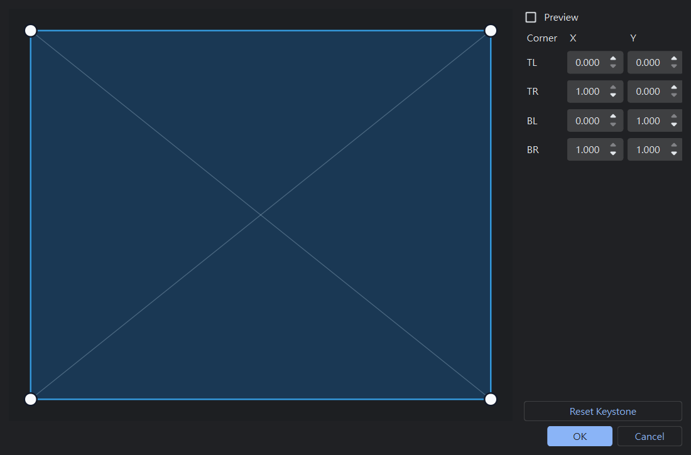
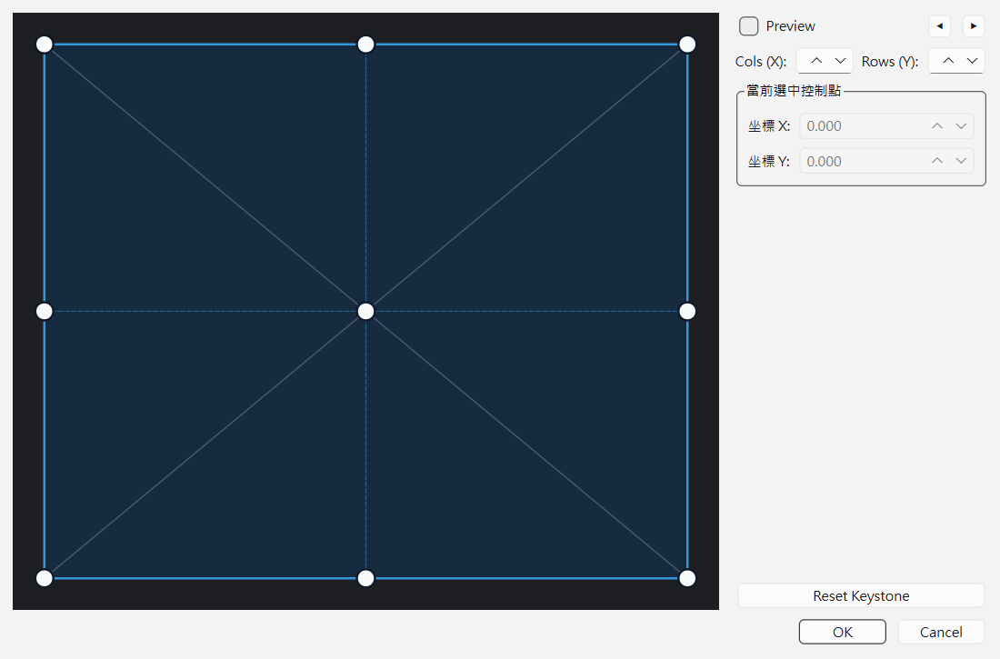
Calibration Modes & Level
- Global Screen Calibration: Menu → Settings → Screen Calibration. This adjusts the geometry of the **entire screen output**, affecting all active video layers globally.
- Cue-level Calibration: Select a Cue → Inspector → Display tab → Keystone. This targets **only the selected video or image Cue**, allowing you to adjust geometry independently.
Traditional 4-Corner vs. Multi-point Mesh Keystone
- 4-Corner Keystone: Adjust the four corners of the projection individually. Suitable for flat rectangular screens.
- Mesh Keystone (3x3 Grid): When enabled, it generates a 3x3 grid (9 control points) across the surface. Drag any point to deform the image non-linearly, ideal for curved walls or cylindrical projection screens.
Keystone & Mesh Keyboard Shortcuts
For convenience during field calibration, the editor supports keyboard adjustments:
- Click any corner handle or grid control point with your mouse to select it (turns **green** when active).
- Press Arrow keys (
↑ / ↓ / ← / →) to move the selected point by `0.002` normalized coordinates (~2 pixels). - Hold
Shift+ Arrow keys: Coarse adjustment by `0.01` increments. - Hold
CtrlorAlt+ Arrow keys: Micro-adjustments by `0.0005` increments for pixel-perfect alignment.
💡 Keystone Layers
In addition to per-cue calibration, Cue Lab supports **Global Keystone Presets** in application settings. Designers can set reference offsets for physical projectors (e.g. correcting mounting offsets) and save them as layers. When Cues are played, they inherit the base layer calibration and superimpose their own keystone adjustments. The system utilizes homography matrix multiplication in OpenCV, combining both into a single GPU rendering transform to maintain maximum rendering performance.
8. Custom Masking & Global Mask Toggle
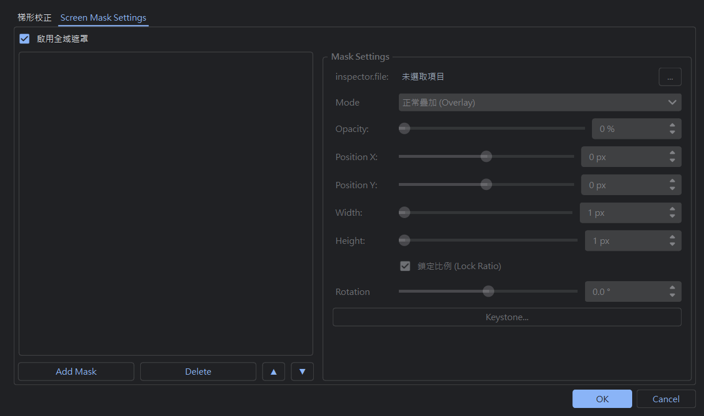
The software features an OpenGL screen-space masking engine. Load custom PNG shapes to frame, feather, crop, or block projection regions.
Mask Blending Modes
- Normal: Overlays the mask image directly on top of the media.
- Crop (Keep Inside): Keeps the media inside the opaque/white parts of the mask image and blacks out the rest. Useful for round or triangle projection frames.
- Block (Hide Inside): Masks out media behind the opaque parts of the mask image, displaying a black shape instead. Perfect for blocking reflections off stage columns, hardware, or speaker towers.
Mask Hierarchy
- Cue Mask: Users create a
CueType.MASKCue containing several mask items. Other Image or Video Cues apply it by choosing its ID under theirparent_mask_idproperties.- 💡 Member Selection Limit: When clicking "Add" in the Mask Cue's member list in the Inspector, the system only displays Video and Image cues as candidate items, as non-visual cues like Audio or Timecode cannot be masked.
- Global Screen Mask: Open the "Screen Calibration" settings dialog and navigate to the "Screen Mask" tab. Mask items configured here apply globally to the entire projection.
💡 Global Mask Toggle Checkbox
At the top of the "Screen Mask" calibration page, there is an **"Enable Global Mask" checkbox**. If you have complex global mask layers but need to temporarily project a full-screen image for alignment, uncheck this box to disable global masks instantly without losing your items configuration.
9. Playback Controls & Keyboard Shortcuts
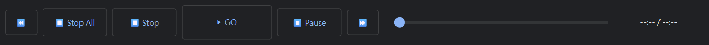
To ensure performance execution safety, Cue Lab features structured shortcuts and playback triggers.
Core Playback Shortcuts
| Shortcut | Control Button | Execution Behavior |
|---|---|---|
Space |
Toolbar GO | Fires the currently selected Cue. Automatically advances playhead to the next line. |
Escape (ESC) |
Toolbar Panic | Fades out and stops all active audio and video playbacks immediately. |
P |
Toolbar Pause | Toggles Pause/Resume for all active playing Cues. |
↑ / ↓ |
Toolbar Prev / Next | Move the playhead selection cursor up and down the list. |
Delete |
Toolbar Delete Cue | Removes the selected Cue from the show list. |
Ctrl + C / Ctrl + V |
- | Copy and Paste the selected Cue items (clones UUIDs, auto-renumbers Cues, and appends below the selection). |
Ctrl + Z |
- | Undo the last action (renumber, copy/paste, deletions, movements, or Inspector sliders). |
Ctrl + Y |
- | Redo the undone action history. |
💡 Dual-mode Stopping & Group Double-stop Prevention
To satisfy complex show control requirements, the system supports dual-mode stopping: while global Panic (ESC) smoothly fades out all active media, you can select specific Cues and hit Stop to independently terminate their playback thread. Furthermore, when a Group Cue has the "stop previous" rule enabled, the engine employs a double-stop prevention filter. When cascading stop commands, it filters out child Cues whose parent Group is already on the stop list, avoiding duplicate signal interrupts that reset fade timers or trigger libVLC audio pops.
10. Timecode System
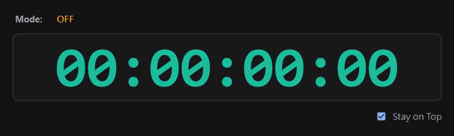
This software integrates a robust SMPTE standard timecode generator supporting LTC (Linear Timecode Audio) and MTC (MIDI Timecode) output modes to coordinate lighting, sound, lasers, and stage effects equipment timelines.
Key Functionality & Specifications
- Dual Output Formats: LTC routing utilizes Bessel 2nd order lowpass filter processing. MTC routing routes MIDI signals to configurable target MIDI ports.
- Virtual Software clock Fallback: Automatically falls back to a software high-precision virtual clock in memory if physical sound card or MIDI device connection fails, keeping time ticking without disruption.
- Group Pause Deduplication: Prevents status toggles cancellation when pausing/resuming Timecode Cues within groups, ensuring stable synchronization.
- Seek Synchronization Alignment: Triggers relative media playhead adjustments (seek) which are calculated and synchronized to sibling Timecode Cues within the group on progress bar scrolls.
- Mask Input Validation: Input offset values format checking is enforced inside inspector fields using a
HH:MM:SS:FFtext mask.
11. Video Preview Window

To support design, rehearsal, and testing on single-screen monitors or laptops when an external projector is disconnected, Cue Lab features a dedicated "Video Preview Mode". This mode switches the full-screen secondary display output into a standard bordered window with a title bar and resize/minimize buttons, allowing you to edit cues and preview visual outputs simultaneously on the same main screen.
Key Functionality & Specifications
- Dual-Mode Switching: Under the top menu "Window" → "Video Preview Mode", toggle the checkmark to convert the projection screen into a windowed preview. Unchecking it instantly restores full-screen output mode. This mode selection is stored in the application settings and restored automatically upon launch.
- Stay on Top (Float): When Video Preview Mode is active, enable "Preview Stay on Top" from the Window menu. The preview window will float above all other program windows. This allows you to select and modify cues in the Cue List or adjust parameters in the Inspector Panel while keeping a real-time eye on the output without the window getting buried.
- Draggable & Free Resizing: You can drag, maximize, or adjust the borders of the preview window using the mouse cursor to customize your screen layout during rehearsals.
12. Project Management & Packaging
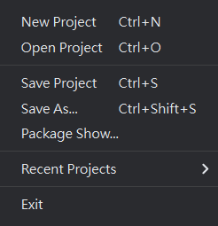
Cue Lab projects are saved with the .cuelab.json extension, storing timing rules, volume values, layout scales, and keystone configurations.
⚠️ Absolute Media Paths Warning
By default, newly imported media is linked via **absolute local paths** (e.g. D:\StageFolder\song.wav). Copying only the .cuelab.json file to another control computer will result in "File Not Found" errors due to drive letter changes.
Bundle Project (Package Project)
To safely migrate projects, utilize the packaging feature:
Packaging Steps
- Click "File" menu → select "Package Project".
- Select an empty target folder. The software will create
audio/,video/, andmasks/directories inside. - Copies all referenced audio, video, image, and mask assets into the bundle.
- Rewrites all file paths inside the project JSON to **relative paths** and saves the new project bundle.
Auto Path Healing
When the packaged folder is transferred, double-clicking .cuelab.json launches the project with auto-healing:
- Checks if original absolute files are reachable.
- If missing, it automatically resolves paths relative to the current project file path inside the
audio/,video/, ormasks/subfolders. - Restores missing files seamlessly, making show file transfers worry-free.
13. FADE Cue & Chain Control
The FADE Cue is a powerful non-destructive control track. It does not contain any media content itself, but is designed to smoothly interpolate parameters (like volume, opacity, position/size, or keystone settings) of a target Cue over a specified duration (Fade Time).
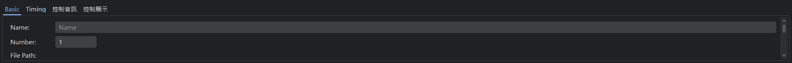
Core Mechanisms & Features
- Recursive Target Resolution: In complex show designs, multiple FADE Cues might be linked to control the same media Cue (e.g. Media Cue -> FADE Cue 2 -> FADE Cue 3). If FADE 3 targets FADE 2, the playback engine automatically resolves recursively until it locks onto the underlying media instance (e.g., Audio/Video instance), ensuring perfect control transmission.
- Grab (Design vs. Live Value Capture):
- Design Grab: When you select a FADE Cue and click "Grab Current Value", the system uses a 3-level fallback capture logic: Preceding FADE settings ──▶ Live Player values ──▶ Media original values. If preceding FADE Cues target the same media, it prioritizes grabbing their targeted values (design values) to maintain consistency in static show design, unaffected by random live playback progress.
- Live Playback: When triggered at showtime, the interpolation starts from the target Cue's actual live value, guaranteeing smooth and correct transitions regardless of whether Cues are executed in sequence or skipped.
- Real-time Preview Sync: When a FADE Cue is playing, any "Grab" or parameter adjustment in the Inspector bypasses UI signal guards, sending updates directly to the engine for instant WYSIWYG previewing.
14. Multi-screen & Video Streaming (RTSP & NDI)
Cue Lab features advanced **multi-screen projection positioning** and **virtual screen video streaming (RTSP & NDI)**, satisfying both physical projection and virtual network routing requirements.
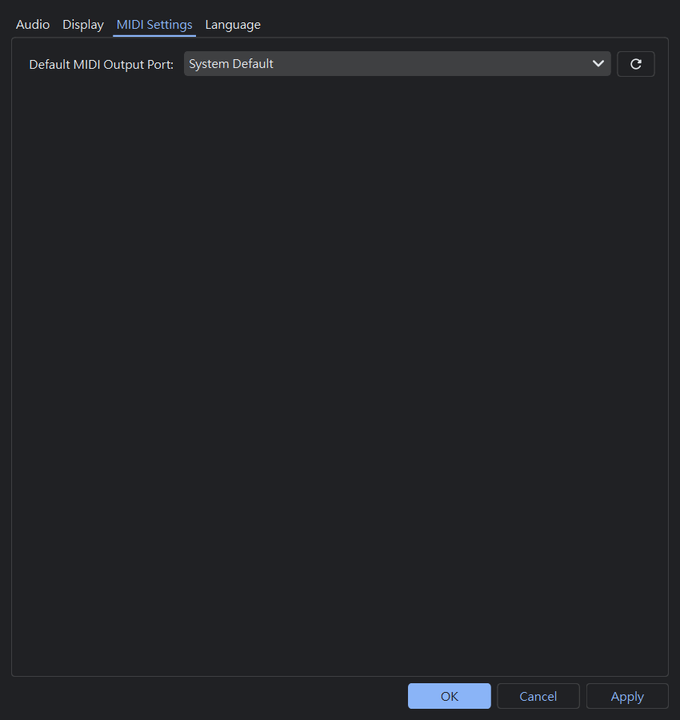
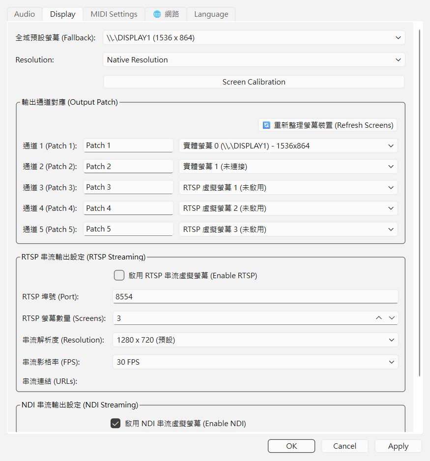
Multi-screen Output & Positioning
Under the "Display" tab of a video/image Cue, you can specify an output_screen index. The VideoEngine automatically routes and matches frameless fullscreen projection windows to the physical monitors, preventing mouse cursor or system UI overlay from interfering with the stage view.
RTSP Virtual Stream Output
When output_screen is set to an index greater than or equal to 90 (e.g. 90, 91...), the window is defined as a Virtual Screen and automatically transcoded to a background RTSP stream:
- Streaming Address: Standard RTSP links like
rtsp://<Host_IP>:<Port>/live/screen_1are broadcasted via the built-in MediaMTX streaming server for receivers like OBS or vMix. - NVIDIA GPU Acceleration & CPU Fallback: The streaming pipeline prioritizes NVIDIA GPU hardware encoding (
h264_nvenc). If it fails due to driver limits, it seamlessly downgrades to CPU encoding (libx264) within 0.2s, ensuring uninterrupted broadcasts. - Black Screen Continuous Broadcast: The stream lifetime is tied to the main application. Even during blackouts or show endings, a 16ms timer continues feeding black frames to prevent OBS or other receivers from losing signal and disconnecting.
NDI Video Streaming
NDI (Network Device Interface) is a high-bandwidth, low-latency LAN video streaming protocol developed by NewTek. Cue Lab seamlessly routes video outputs to NDI streams, allowing the main video render frame to be broadcasted across the local network in real-time.
- Virtual NDI Screens: Broadcast fullscreen outputs to LAN as NDI feeds (supports up to 5 NDI channels).
- NDI Modes:
- NDI Full (Lossless & Low Latency): High-fidelity, lossless, ultra-low latency streaming, perfect for high-speed local networks.
- NDI HX (High Efficiency): High-efficiency compressed stream, ideal for limited bandwidth or cross-network setups.
- Seamless Integration: Access Cue Lab screens in third-party software like OBS, vMix, MadMapper, or on physical NDI decoders, reducing hardware cable complexity.
15. Network Cue (Network Cue)
The Network Cue enables sending standard network triggers to external equipment. In a theatrical environment, it is useful for controlling projector power, shutters, or triggering external lighting consoles or sound software. It supports standard PJLink (Projector Control) and OSC (Open Sound Control) protocols.
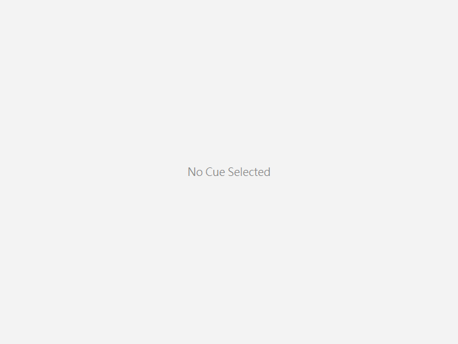
Protocols & Use Cases
- PJLink Projector Control Protocol:
- Commands: Supports standard commands like "⚡ Power On", "⏻ Power Off", "🔲 Shutter Close (mute/black out screen)", and "🔳 Shutter Open (restore screen)".
- Target Management: Multi-select target projectors in the inspector. Configure projector IP addresses, ports, and authentication passwords under "Settings -> Network".
- OSC (Open Sound Control) Protocol:
- Broadcast/Unicast: Send standard OSC messages to custom target hosts (e.g., primary/backup lighting consoles like ETC EOS, QLab sound servers, or media servers).
- Message Path: Enter strings like
/eos/cmd/Group/3000/FAN_CENTER/X_Focus/+1/enter. Configure target computers under "Settings -> Network".
16. sACN (E1.31) Lighting Network Remote Control
sACN (Streaming ACN, ANSI E1.31) is an industrial-standard Ethernet DMX protocol widely used in theatre, concerts, and live entertainment. Cue Lab incorporates an ultra-responsive sACN receiver engine that allows external professional lighting consoles (such as GrandMA2/3, ETC Eos/Ion, Avolites, Chamsys, etc.) to trigger playback and show control commands remotely over LAN, achieving seamless synchronization between stage lighting and multimedia cues.

Supported 6 Core Actions
| Control Action | Default DMX Channel | Description |
|---|---|---|
| GO / Play | Ch 1 |
Trigger current selected Cue playback and advance playhead to next Cue (equivalent to Spacebar). |
| Pause / Resume | Ch 2 |
Pause or resume actively playing Cues (equivalent to Pause key). |
| Stop Selected | Ch 3 |
Stop only the currently selected Cue without affecting other running audio/video tracks. |
| Stop All / Panic | Ch 4 |
Emergency stop all running Cues, fades, and timers immediately (equivalent to Escape key). |
| Previous Cue (Prev) | Ch 5 |
Move playhead up by one Cue (equivalent to ↑ Up arrow key). |
| Next Cue (Next) | Ch 6 |
Move playhead down by one Cue (equivalent to ↓ Down arrow key). |
Configuration Parameters
- Universe: The sACN Universe to listen on (Default:
1, range 1 ~ 63999). Lighting console must transmit on the same Universe. - Network Interface (Bind IP): Select
0.0.0.0 (All Interfaces)or bind specifically to the physical IP of your lighting network adapter for isolated LAN security. - Trigger Threshold: DMX value range 0 ~ 255 (Default:
200). An action is triggered immediately when fader value rises to or exceeds 200. - Channel Mapping: Fully customizable channel assignments from 1 to 512 with duplicate channel collision protection.
💡 Industrial State Latching & Priority Packet Filtering
1. Single-Shot State Latch: When the console fader crosses the threshold, the action triggers exactly once and latches. Holding or moving the fader above the threshold will never multi-fire; it must drop below threshold to re-arm.
2. E1.31 Priority Filtering: Automatically identifies and ignores E1.31 Per-Channel Priority packets (StartCode 0xDD), processing exclusively true DMX level data to prevent network crosstalk.
17. Dual-Machine Hot-Standby Redundancy
In high-profile theater productions, live broadcasts, and large-scale commercial events, a single computer failure (system crash, hardware lockup, or power glitch) can lead to catastrophic show disruption. Cue Lab features an industrial-grade Dual-Machine Hot-Standby Redundancy architecture. A Primary (Master) console and a Standby (Backup) console mirror each other in real-time over a local network. Even if the primary console suffers a sudden failure mid-show, the standby console takes over seamlessly with zero audience disruption.

17.1 Core Architecture & Key Capabilities
⚡ Sub-5ms Transport Mirroring
When the Primary triggers GO, Panic, Pause, or moves the playhead, the Standby responds within 5ms for frame-accurate audio and visual synchronization.
🔒 Local Hardware Output Isolation
While the Cue structure is 100% mirrored, the Standby retains its local physical screen mappings and soundcard channels without interference.
📁 Dual Media Synchronization
Supports background asynchronous network transfer as well as theater-standard pre-copy workflows for massive 4K media files without network delay.
🔄 State Drift Self-Healing
Upon network reconnection, the Standby automatically queries the Primary's live playhead position and reconciles show state seamlessly.
17.2 Connection Setup & Authorization Workflow
Standard Connection Procedure:
- Enable Redundancy on Both Machines: Go to "Settings -> Preferences -> Dual Redundancy" on both computers, check "Enable Dual Redundancy", and verify communication port (Default:
7788). - Establish Network Connection:
- Method A (Auto-Discovery): Click the Dual Redundancy icon on the Primary toolbar. Cue Lab discovers peers on the local subnet via UDP port 7789. Select the Standby machine and click "Connect".
- Method B (Manual Direct Connect): Enter the Standby machine's LAN IP address (e.g.,
192.168.10.102) and port7788, then click "Connect to Target".
- Standby Authorization Prompt (Security Mechanism): A confirmation modal appears on the Standby screen asking to accept or reject the connection. The operator must click "Yes". This prevents accidental or unauthorized remote connections.
- Toolbar Status Indicators:
🟢 Green (Connected): Linked with active heartbeat. Tooltip displays live Round-Trip Time (RTT in ms).
🟡 Yellow (Connecting): Negotiating handshake or retrying auto-reconnect.
🔴 Red (Disconnected): Disconnected or offline.
17.3 Transport Control & Live Property Synchronization
- Transport Command Mirroring:
- GO (Spacebar): Primary triggers playback; Standby triggers simultaneously and advances the playhead cursor.
- Panic (Escape): Primary initiates emergency stop; Standby fades out and halts all audio, video, and timers.
- Playhead & Seek Navigation: Primary uses
↑/↓arrow keys or drags waveform time (Seek); Standby matches position in real time.
- Live Property Sync:
- Adjustments made in Primary Inspector (Volume, Playback Rate, Opacity, Position X/Y, or Keystone) sync instantly to Standby.
- Dynamic Hot-Update: If the target Cue is actively playing, visual transformations or volume changes update live without re-triggering.
- Group Cue Hierarchy Sync: Grouping multiple Cues, ungrouping, or reordering members updates the tree model automatically with crash-proof reset guards.
17.4 Media Storage Paths & Two Synchronization Workflows (Crucial Guide)
To satisfy different production environments, Cue Lab provides two distinct media distribution workflows:
Workflow 1: Automated Background Network Transfer (For Rehearsals & Routine Updates)
When machines are connected, adding or swapping media assets on the Primary automatically pushes physical files to the Standby in the background without manual copying.
- Standby Storage Directory:
C:\Users\<Username>\AppData\Roaming\CueLab\SyncedMedia\
(Shortcut: Type%APPDATA%\CueLab\SyncedMediainto Windows File Explorer address bar and press Enter) - Optimized Chunking: Files transfer in 256 KB chunks with dynamic micro-yielding, achieving 100+ MB/s over Gigabit LAN. The toolbar displays an active transfer animation and progress percentage.
- Collision Isolation: Different Cues referencing identical filenames (e.g.
bg.pngfrom different folders) are stored as{cue_id}_{filename}to prevent overwrite collisions. - Auto-Waveform & Mask Binding: Standby automatically calculates audio duration and renders waveform peaks once transfer completes; mask files auto-bind to their respective layers.
Workflow 2: Manual Pre-Copy Workflow (Recommended for Theater & Heavy 4K Shows)
Q: If I copy the media files to the Standby machine beforehand, can I trigger synchronized Cues immediately upon connecting?
A: Absolutely YES! Transport commands (GO/Panic) transfer in packets of only tens of bytes. If your show includes tens of gigabytes of 4K video or multi-track audio, pre-copying files to the Standby is the industry standard best practice to avoid long network transfer delays.
Recommended Option A: [Most Intuitive] Open the Identical Copied Project Folder on Both Machines
- Package on Primary: In Cue Lab, select "Project -> Package Project", or copy the entire show folder containing
.cuelab.jsonand itsaudio/andvideo/subfolders to a portable drive. - Transfer to Standby: Copy the project folder to the Standby machine (e.g., to Desktop).
- Open on Standby: Open the
.cuelab.jsonproject file in Cue Lab on the Standby.
* Cue Lab features automatic "Path Self-Healing". If Primary absolute paths do not exist on Standby, it auto-searches the project directory and fixes references instantly! - Connect Both Machines: Click Connect on both machines (Green Connected indicator).
- Trigger Immediately: Press Spacebar (GO) on Primary. Standby plays synchronously with zero network media transfer required!
Alternative Option B: Pre-stage Media Assets into the Standby Cache Directory
- On Standby, navigate to
%APPDATA%\CueLab\SyncedMedia\. - Paste all audio, video, and image files directly into this directory.
- Connect both machines, then on Primary click "Push Snapshot to Peer".
- Local Cache Match: Standby detects existing media in
SyncedMediaand binds them directly, completely bypassing duplicate network transfers!
17.5 Local Hardware Output Isolation
Primary and Standby consoles frequently feature different physical peripherals (e.g., Primary drives 3 projectors and a 16-channel DANTE card, whereas Standby connects to 2 backup monitors and a USB audio interface):
- Pushing project snapshots syncs show logic, screen patches, layers, masks, sACN, and network devices.
- Hardware Isolation (Preserve Hardware Outputs): Deserialization strictly preserves the Standby's local Screen Index mapping and Audio Device routing, preventing silent audio or blackout video caused by hardware mismatches.
17.6 Heartbeat & State Drift Self-Healing (State Reconciliation)
- Heartbeat & Timeout Alert: Sends
HEARTBEAT_PINGevery 2 seconds. If no packet arrives for 7 seconds, the engine flags a disconnection and alerts the operator. - Background Auto-Reconnect: If enabled, attempts reconnection every 5 seconds (up to 30 attempts) without blocking UI controls.
- Playhead Alignment (State Sync): As soon as reconnection succeeds, Standby sends
STATE_QUERY. Primary replies with current Playhead row and active Cue ID. Standby auto-scrolls and highlights the target row to maintain strict sync.
17.7 Emergency Failover Standard Operating Procedure (Failover SOP)
Live Emergency Takeover Steps:
- Hardware Routing Switch: Switch the video matrix (HDMI/SDI) or audio switcher to the Standby lines (typically automated in under 0.2s via auto-detect switchers).
- Seamless Software Takeover:
- Because Standby continuously mirrors the Primary's exact Playhead position;
- The Standby operator simply presses Spacebar (GO) on the Standby keyboard to proceed with the next Cue seamlessly!
18. Troubleshooting
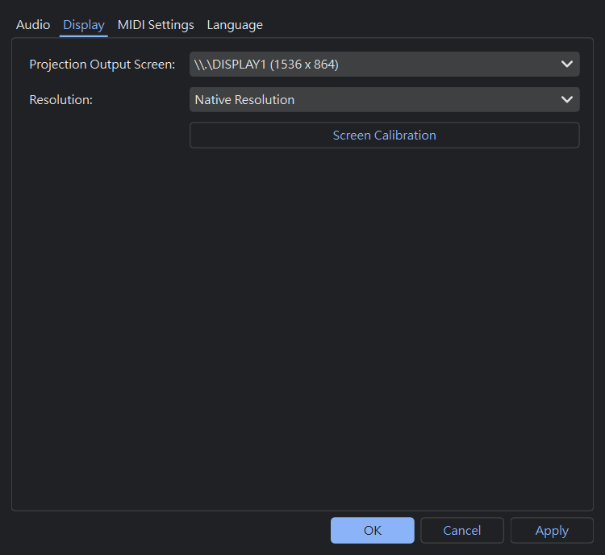
Q1: Projector is not displaying any video output.
Solution:
- Ensure external screen settings are set to "Extend" mode in Windows Display Settings.
- Open Cue Lab Settings dialog, verify the target output index (usually 1 or 2) in the "Projection Screen" dropdown, and click OK.
Q2: Projection borders are clipped or layout is stretched out of shape.
Solution:
- Switch the display resolution from "Native" to a fixed screen resolution (such as 1920x1080) in Settings.
- Change the selected Cue's "Scale Mode" in the Inspector Display tab from
StretchtoFitorFill.
Q3: Audio is not outputting sound.
Solution:
- Under the Cue's Audio tab in Inspector, verify that the "Output Device" dropdown is mapped to the active sound card. If it was unplugged, select "System Default (default)".
- Verify that the "Output Audio" checkbox is checked (unchecking it will mute the player).
Q4: Keyboard shortcuts like Ctrl+Z are not responding.
Solution:
- Ensure the Cue List Table is focused (click anywhere on the table). If focus is trapped inside a text input line, shortcuts will edit text rather than the Cue list history.
Q5: Lighting console sACN commands are not triggering Cues.
Solution:
- Ensure the
📡 sACNbutton on the top toolbar is active (shows Universe number, e.g., U1, rather than "Disabled"). - Open "Settings -> sACN Remote Settings" and verify that the Universe Number and DMX Channel Mapping match the lighting console patch exactly.
- Ensure Windows Firewall permits inbound UDP port 5568 packets for Cue Lab, and that the computer and lighting desk share the same IP subnet (e.g. 192.168.1.x).
Q6: Dual redundancy cannot discover peer machine or fails to connect.
Solution:
- Verify that "Enable Dual Redundancy" is checked on both computers and that the communication port (Default: 7788) matches.
- If auto-discovery does not list the peer, use "Method B: Manual Direct Connect" and enter the peer machine's IP address directly, then click "Connect".